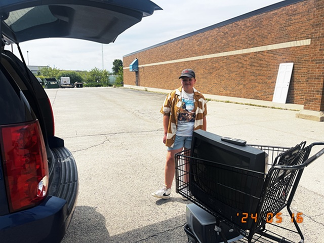
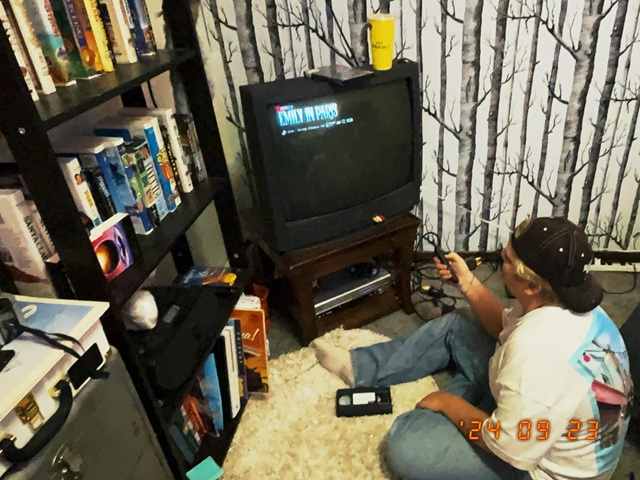
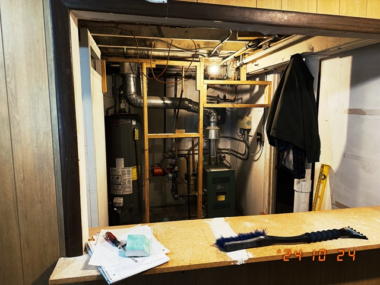
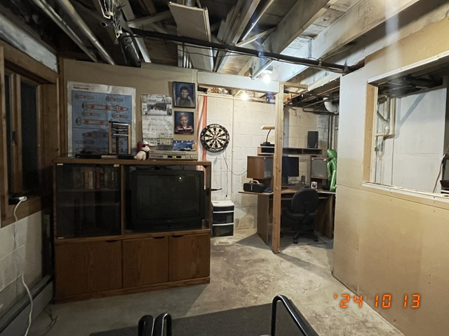
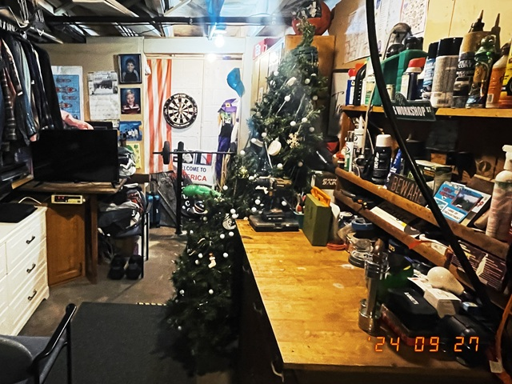
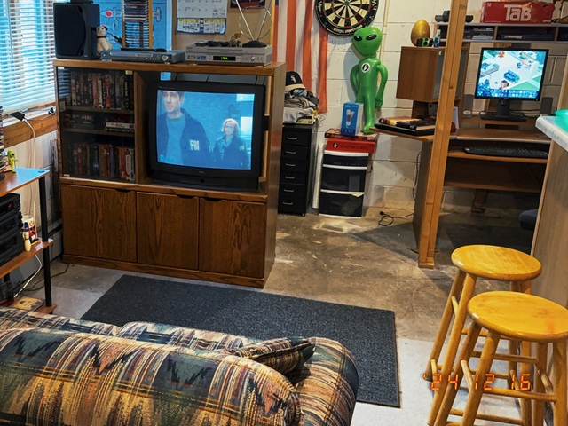

There is this room in my basement. A room which by some unexplained phenomena has escaped time and space as we know it. A room where CRT TVs, landline phones, and Windows 95 still have their place. In this room, VHS is king, and CDs and cassette tapes are the only way to listen to music. I never worry about being gone for too long because I know that the answering machine will get my messages.
 
A year ago, I took my son Vincent out for his birthday and we stopped at a thrift store in Illinois. That was the day I found my Windows XP computer that I still use daily to update this website. That was also the day Vincent found an old TV with the original remote just sitting on the floor. When we inquired about it, we were told they would let it go for $5. I don't know why my son wanted this TV but that very moment kicked off this project that would consume much of my time over the next year.
When we got home that day, we immediately set up the TV in my son's room. Vincent became obsessed with CRT TVs and VHS tapes. That's when it hit me, and so I pitched an idea to my wife: what if I remodeled my office to look like a room that was forever stuck in the 90's? I couldn't tell why she wasn't as fascinated by the idea as I was. Still, I got to work and began knocking down walls, and thrifting furnitures. Little by little, my vision became reality.
 
Looking for, and finding decorations that would seem genuine has been exciting. I have spent a great deal of time looking for the perfect wallpaper, flooring, and various items that would give the very real impression that this room had not been touched in decades. I have tried to arrange the furniture in a way that would feel authentic, and not like a museum display. Most of the items I picked up were dirt cheap, yet they have brought me more joy than any expensive gadget I ever bought. The computer alone feels like a time machine of its own. Whether it is playing The Sims or hearing sounds I have not heard in 20 years, it is those simple things that make it feel real.
 
This website ties it all together in a perfect way. It allows me to document my journey, all while adding a hidden component to my office which is a 90's experience of surfing the web. Building this website, drawing inspiration from distant memories of what the world wide web once was, has been incredibly fun. What makes it even more interesting is knowing that no one will probably ever see it.
Eerie at times, but mostly comforting, stepping into my office feels like stepping back in time. The year is 2026 but it might as well be 1996.